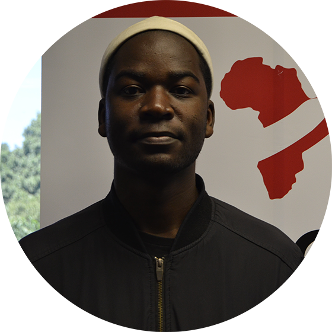

Welcome to Wits
Biomedical Informatics and Translational Science
a Division of Wits Health Consortium
WitsBITS was established in 2014 as a division of Wits Health Consortium (Pty) Limited (WHC), a company wholly-owned by the University of the Witwatersrand.
WitsBITS serves as a home for several clinical and biomedical informatics related projects that had been running in the Faculty of Health Sciences since August 2012.
WitsBITS membership includes clinical and academic staff and students from the Faculties of Health Sciences, Science and Engineering.
The division´s mandate is:
- Grow the capacity for Health Informatics in the Faculty − human, infrastructure and knowledge
- Procure and develop appropriate electronic data collection and curation systems
- Provide informatics support to the researchers, clinicians, and students in the Faculty of Heath Sciences
- Hands-on training workshops
- Consultation sessions to assist with research protocol development, data management plans, instrument development, implementation management, clinical data processes, bioinformatics data analysis and more
- Development of software tools to support your data management needs
- Supervision and data repositories for student research projects
- Internships for students or graduates interested in gaining practical experience in a Health Informatics setting
The Team
Dr Michael Klipin - Head of Division
Lecturer, Department of Surgery, Faculty of Health Sciences, University of Witwatersrand
michael.klipin@wits.ac.za

Prof Scott Hazelhurst - Technical Advisor
Professor, School of Electrical & Information Engineering, Faculty of Engineering and the Built Environment, University of the Witwatersrand
scott.hazelhurst@wits.ac.za
Mrs Irma Maré - Biomedical Informatics & REDCap Manager
Honorary Lecturer, Department of Surgery, Faculty of Health Sciences, University of the Witwatersrand
irma.mare@wits.ac.za
Dr Phelelani Mpangase - Bioinformaticist
Faculty of Health Sciences, University of the Witwatersrand
phelelani.mpangase@wits.ac.za
Ms Mapule Nhlapho - Biomedical Informatics Officer
Faculty of Health Sciences, University of the Witwatersrand
mapule.nhlapho@wits.ac.za
Ms Belinda McBride - Administrative Officer
Faculty of Health Sciences, University of the Witwatersrand
belinda.mcbride@wits.ac.za

Mr Thato Maboya - Software Development & Data Science Intern
Faculty of Health Sciences, University of the Witwatersrand
thato.maboya@wits.ac.za
Mr Proud Sachinda - Software Development Intern
Honours student, School of Computer Science, Faculty Science, University of the Witwatersrand

Mr Jolame Chirwa - Software Development Intern
Honours student, School of Business Science, Faculty Commerce, Law & Management, University of the Witwatersrand
Mr Brad Segal - Data Science Intern
Medical Student, Faculty of Health Sciences, University of the Witwatersrand
Ms Ndzalama Shivambu - REDCap admin and BMIO
Faculty of Health Sciences, University of the Witwatersrand
@wits.ac.za